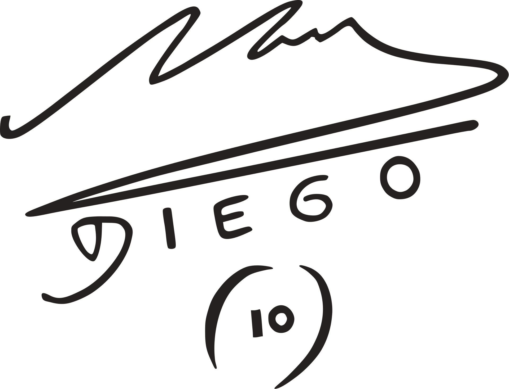

Datos Personales
- Nombre completo: Diego Armando Maradona Franco.
- Apodos: Pelusa, Barrilete Cósmico, Pibe de Oro, D10S.
- Nacimiento: Lanús, provincia de Buenos Aires, Argentina 30 de octubre de 1960.
- Nacionalidad: Argentina.
- Fallecimiento :( : Dique Luján, Tigre, Buenos Aires, Argentina 25 de noviembre de 2020 (60 años).
- Altura 1,65 m (5′ 5″)5 .
- firma:

Datos Personales
- Debut deportivo: 20 de octubre de 1976 (Argentinos Juniors)
- Posición: Centrocampista
- Dorsal: 10
- Retirada deportiva: 25 de octubre de 1997 (Boca Juniors)
- Debut como entrenador 9 de octubre de 1995 (Deportivo Mandiyú)
- Retirada como entrenador 25 de noviembre de 2020 (Gimnasia y Esgrima La Plata)
Trayectoria
Profesional:
- A. A. Argentinos Juniors (1976-81)
- C. A. Boca Juniors (1981-82)
- F. C. Barcelona (1982-84)
- S. S. C. Napoli (1984-92)
- Sevilla F. C. (1992-93)
- C. A. Newell's Old Boys (1993-94)
- C. A. Boca Juniors (1995-97)
Entrenador:
- Deportivo Mandiyú (1994)
- Racing Club (1995)
- Selección Argentina (2008-10)
- Al Wasl FC (2011-12)
- Al-Fujairah SC (2017-18)
- Dorados de Sinaloa (2018-19)
- Gimnasia y Esgrima La Plata (2019-20)